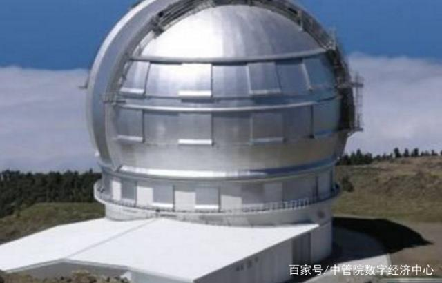
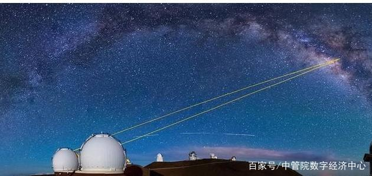
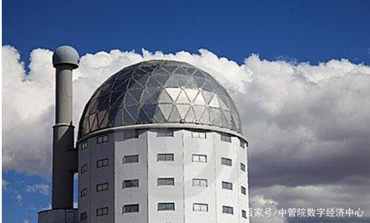
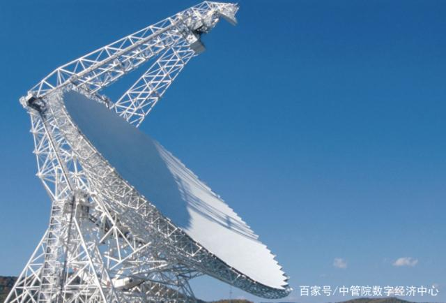
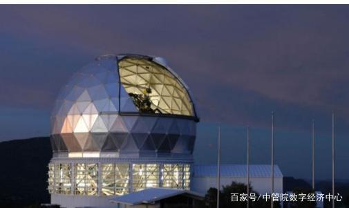
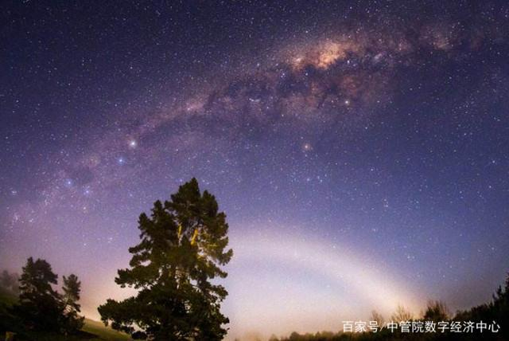
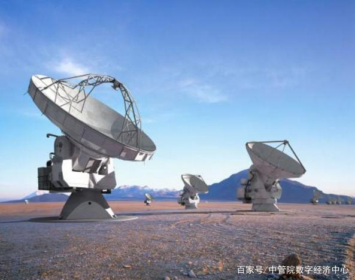
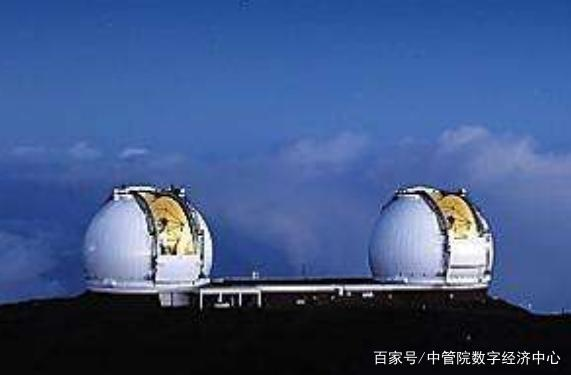
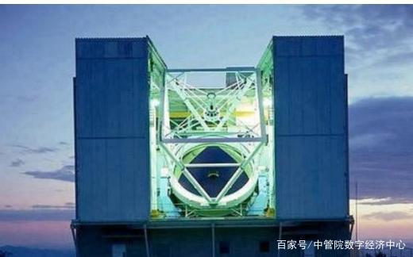
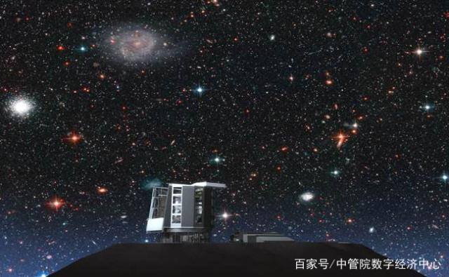

| 世界十大望远镜排行榜！全球十大天文望远镜有哪些？ | |
|---|---|
一、加那列大型望远镜加那列大型望远镜是全球十大天文望远镜之一，位于西班牙帕尔马加那列岛屿上的一个小岛上面。这个望远镜是西班牙政府和墨西哥研究机构以及美国佛罗里达州大学共同建造的一个大型的望远镜，据说这个大型的望远镜投资1.75亿美元。 |
 |
二、凯克望远镜加那列大型望远镜是全球十大天文望远镜之一，位于西班牙帕尔马加那列岛屿上的一个小岛上面。这个望远镜是西班牙政府和墨西哥研究机构以及美国佛罗里达州大学共同建造的一个大型的望远镜，据说这个大型的望远镜投资1.75亿美元。 |
 |
三、非洲南部大型望远镜非洲南部大型望远镜位于非洲南部的的山顶上，这个天文望远镜是南半球最大的一个单光学望远镜，是由91块镜面六角形组件构成，这款天文望远镜可以探测到月球距离如同烛光的微弱光线，2005年的时候这个望眼镜开始投入使用，来自美国和德国以及新西兰等国家的天文学家都使用过这个大型的望远镜。 |
 |
四、霍比-埃伯利望远镜霍比-埃伯利望远镜位于美国，被称为HET。这个望远镜和非洲南部望远镜有些相似。霍比-埃伯利望远镜可以探测到比肉眼可观测光线暗1亿倍的宇宙光线。这个望远镜能够吸收大型的光线特别是光谱仪。 |
 |
五、大型双筒望远镜大型双筒望远镜又被称为LBT，第一个天文望远镜是2004年代额时候在美国亚利桑那州格雷厄姆山顶上架设，第二个天文望远镜是在2005年的时候安装的，这两个望远镜能够实现合并式的观测，拍摄的照片很美。 |
 |
六、昴宿星团望远镜昴宿星团望远镜直径为8.2米，是一台光学和视觉红外线天文望远镜，这个望远镜总共有3个特点，第一就是镜面薄是通过主动光学和自适应光学来获得比较高的成像质量的，第二个优点是能够实现高精度的跟踪，第三个优点采用圆柱形观测室能够自动控制通风和空气过滤器，使热湍流的排除达到最佳条件。这款望远镜拥有全球最大的望远镜单镜片，很多国家的天文学家都可以使用。 |
 |
七、欧洲南方天文台甚大望远镜干涉仪欧洲南方天文台甚大望远镜干涉仪位于智利塞罗-帕拉纳山上面，这个大型的天文望远镜是由4个8.2米直径望远镜构成。是全球十大天文望远镜之一，能够单独操作甚大望远镜能够提供比较详细的观测资料，能够捕捉十亿分之一秒的星体运动变化。 |
 |
八、双子望远镜双子望远镜不是两个相邻的望远镜，它们分别位于东西半球的两个天文观测点。位于北半球的天文望远镜可以与夏威夷莫纳克亚山的其他望远镜协同操作。将望远镜放在两个半球能够方便于进行全天候的系统观测。 |
 |
九、多镜面望远镜多镜面望远镜又被称为MMT，这个望远镜6.5米直径的主镜面具有特殊轻重量蜂巢设计。这个多镜面望远镜被称为艺术级别的建筑，外形比较独特，不具备传统天文台的圆顶结构。将天文台的墙壁和顶部与望远镜结合在一起能够提高观测的效率。地址位于美国亚利桑那州图森市霍普金斯山上。 |
 |
十、麦哲伦I & II望远镜麦哲伦I & II望远镜位于智利阿塔卡马沙漠的高处。是目前新建造的一个双体望远镜。这两个望远镜相隔200英尺。望远镜的6.5米直径镜面漂浮在高压油薄膜上，摩擦力比较小，小孩子能够推动这个150吨的望远镜。 |
 |
|
世界著名天文学家有哪些？说到天文学，对于大多数人来说都是个遥远的存在。 天文学家更是神秘莫测，那你知道世界著名天文学家有哪些呢？ | |
|---|---|
尼古拉·哥白尼（1473年2月19日—1543年5月24日），是文艺复兴时期的波兰天文学家、数学家、教会法博士、神父。在哥白尼40岁时，他提出了日心说，否定了教会的权威，改变了人类对自然对自身的看法。当时罗马天主教廷认为他的日心说违反《圣经》，哥白尼仍坚信日心说，并认为日心说与其并无矛盾，并经过长年的观察和计算完成他的伟大著作《天体运行论》。他用毕生的精力去研究天文学，为后世留下了宝贵的遗产。 |
|